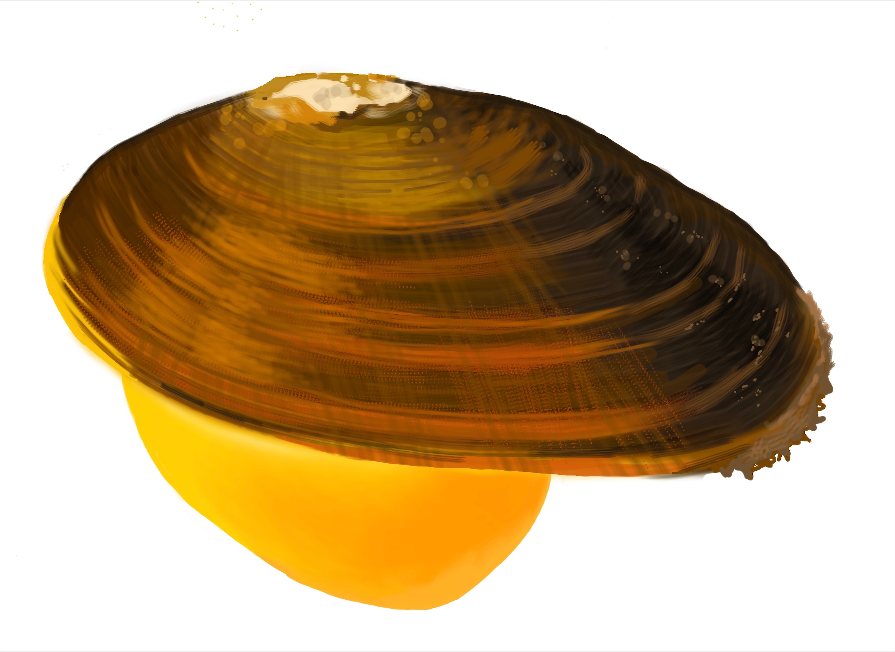
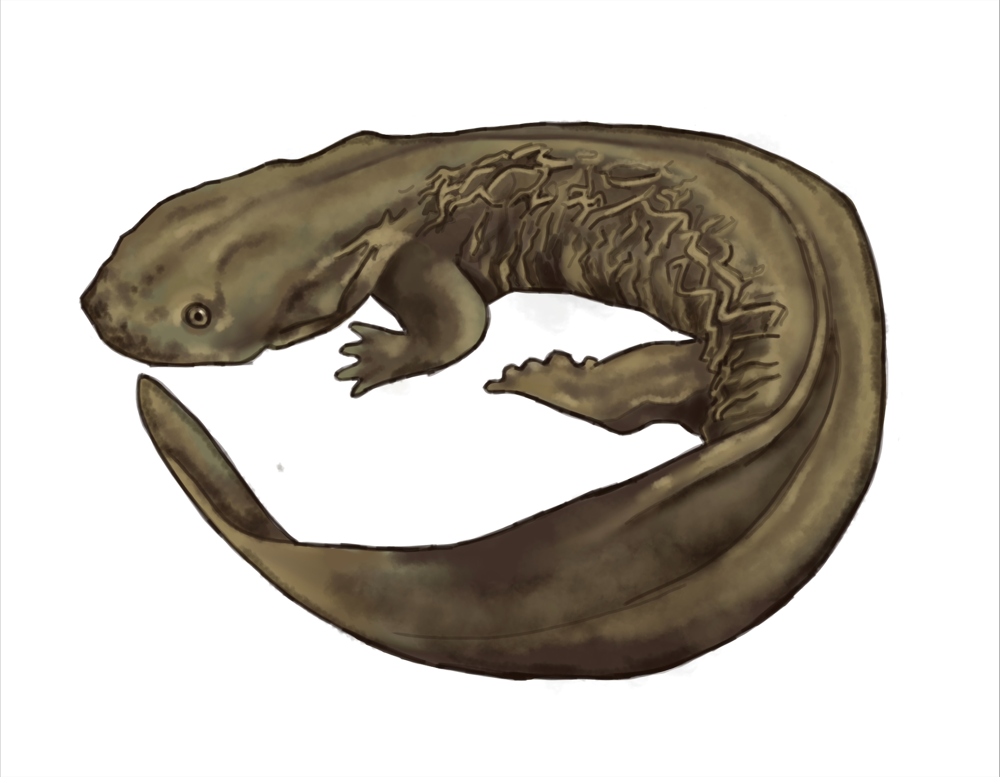
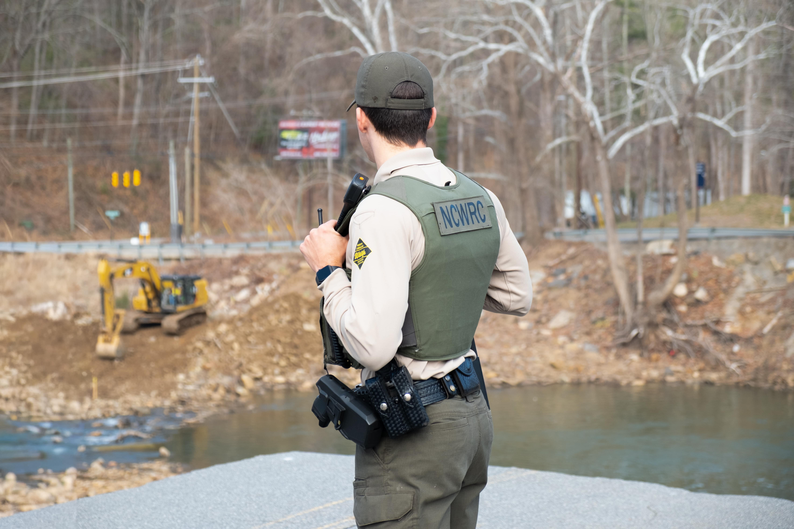
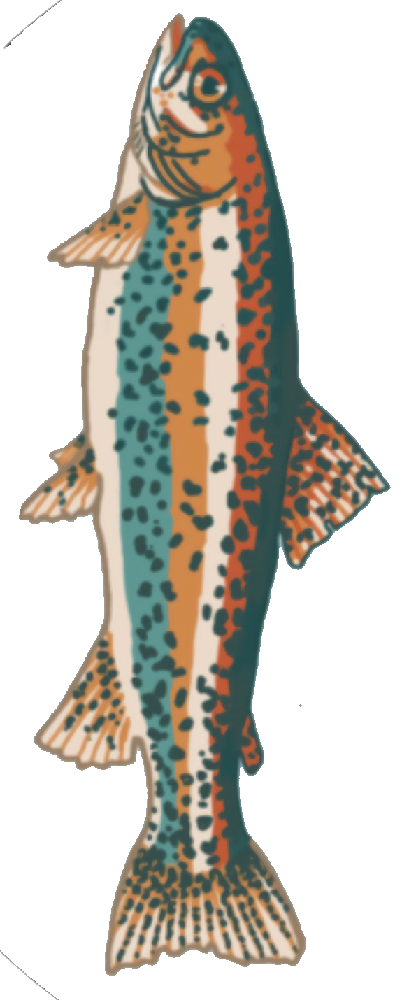
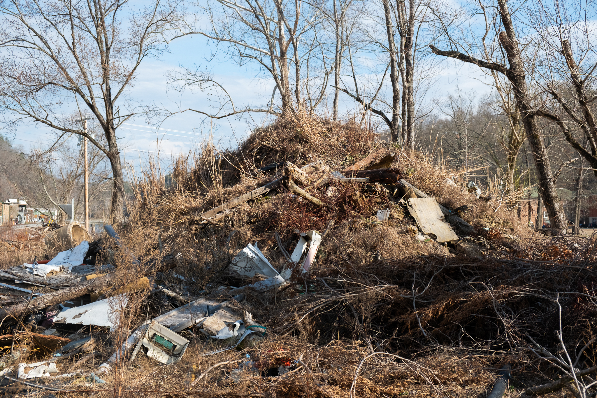

Hans Lohmeyer is standing in a lively park on the outskirts of Asheville as children and dogs gambol around him. He's just about to step onto a nature trail along Cane Creek that was only recently reopened after tropical storm Helene ravaged its banks and many of its inhabitants.
"It experienced just crazy amounts of tree loss and damage. You'll see it along the creek…the flooding damage, destabilization from the stream banks," Lohmeyer said as he walked along the now placid waterway at Bill Moore Community Park in Fletcher, North Carolina. "I don't think it'll be quite the same as what it was before, just due to the sheer power and the impact from the [storm]."
Lohmeyer is stewardship manager for Conserving Carolina, a non-profit that works to preserve land and water resources throughout Western North Carolina by focusing on creating trails and educating the community about the importance of habitat. What he's particularly interested in these days is one of the smallest creatures that suffered significantly from Helene: freshwater mussels.

Freshwater mussels cluster in beds along creek bottoms throughout Western North Carolina. Some species are on the endangered list. Illustration credit: Beck Orten
The fallout for this largely unseen and unknown creature is just one example of the extent of damage the storm wrought in the natural world alongside the better-publicized human one. Mussels are one species that scientists and researchers are watching and worrying about. Another to take a hard hit was the famously (so-ugly-it's-cute) hellbender salamander, which can grow up to 2 feet long and live up to 30 years, and a couple of species of freshwater trout.
The impact has environmentalists and scientists wondering how long the region's smallest sufferers will take to bounce back along the thousands of miles of riverbeds, brooks, creeks, lakes and ponds, and what they can do in future storms to limit the fallout, particularly in the storm's aftermath when cleanup takes place in environmentally sensitive areas.
"A lot of mussels got run over," Lohmeyer said about the vulnerable freshwater population of mollusks that resides in riverbeds throughout Western North Carolina. These small creatures, some on endangered species lists, cluster together in "beds" among rocks and eddies. They are critical to the ecosystem because they serve as nature's filtering system, siphoning out pollutants as water runs over their extended necks. "The storm did have a very negative impact on those populations."
Not only did the tiny mollusks experience the rushing water as it swelled the rivers and creeks where they live. But afterward, they had to endure a cleanup that involved massive construction vehicles driving up and down to remove thousands of pounds of washed-out debris. The extent of loss isn't even fully understood, and likely never will be.
A second victim of these twin assaults was the brownish, yellowish aquatic hellbender salamander that lives in the mud and among the rocks of riverbeds. This habitat, again, put the amphibian in the direct line of destruction. And just like the mussel, the result will likely be felt for generations of hellbenders to come, experts say.

The hellbender, North America's largest aquatic salamander, lives among rocks in fast-moving streams — putting it directly in Helene's path. Illustration credit: Beck Orten
"Those impacts that we're dealing with are probably going to still deal with for the next, at least 10, 15 years," said Hannah Woodburn, a riverkeeper for MountainTrue, a nonprofit that works to protect clean water and resilient forests across the southern Blue Ridge region. "No. 1, the banks were already pretty eroded from the storm event itself, and then No. 2, that secondary impact of having heavy machinery coming in, accessing, cutting all the live trees and remaining vegetation along from the banks – but then also driving these giant machines up and down the streams as well," she said.
This kind of loss is ruinous for a species that has already declined by 70% in the region since the early 2000s, Woodburn said. "It was kind of this double whammy. They probably smushed anything that had survived the flood."
Austin Keever, a wildlife enforcement officer with the state's Wildlife Resources Commission, oversees the welfare of many different species in the area, from black bear and white-tailed deer to the three types of freshwater trout native to Western North Carolina — brook, rainbow and brown. He, like other wildlife stewards, is still trying to assess the damage to these populations and their habitats.

Buncombe County's wildlife enforcement officer, Austin Keever, watches as a construction team works to remove blockages from the Swannanoa River. Photo credit: Sydney Woogerd
Apart from several trout hatcheries across the western part of the state that were destroyed in the storm — with no plan to rebuild until 2027 or 2028 — the wild fish populations also suffered setbacks because of multiple changes to the rivers.
For example, some areas of the water were so muddy or "turbid" that fish were having trouble surviving it, Keever said as he drove his 4-wheel-drive gray ranger truck around the northern edge of Asheville. He also noted the dangerous debris littering the waterways including broken wood and rusty nails from the numerous structures that were swept into the water.

There are three types of native trout in the state, all impacted in some way by tropical storm Helene. Illustration credit: Beck Orten
"If you look on the side of that bridge, you can still see debris stuck under the bridge," he said, pointing to a disruption in the rushing water. "Y'all see that? Wow. So, I mean, like, that's going to be there for years, just about. It's just kind of normal now, the last thing on people's radar."
Further up the French Broad, Mandy Wallace, artifact recovery technician working with the conservation non-profit MountainTrue, noted that thousands of pounds of plastic debris remain in the water, some of which is dissolving into microplastics to be ingested by fish and other creatures, and some of which is inhibiting wildlife movement.
For example, thousands of sections of white plastic PVC pipe that were stored in a lot along the French Broad were flushed into the river during the flood and then transported miles in the current, some ending up as far as Tennessee. Not only is this hazardous for paddlers, she said, but Wallace and her crew found the pipes teeming with catfish as they tried to remove them. "It's just hard," Wallace said on a sunny weekday alongside a cleanup team of about 10 who were using canoes to retrieve the pipes. "They're going to adapt. I mean, we do what we can."
A group of MountainTrue clean-up crew members pack up their canoes after a day of pulling debris from the French Broad River. Video credit: Sydney Woogerd
While much of the news is bad, some species have triumphed in the wake of the storm, said Keever. Because of the tree loss, birds of prey such as hawks and eagles can see the ground better to hunt. All of the rotting wood and subsequent bug activity have been good for woodpeckers. And the brush debris has made good habitat for small game, he said, such as raccoons, rabbits, squirrels, doves and quail.
There were also some wildlife revelations in the aftermath. Melissa Bahleda, who works at the May Wildlife Rehabilitation Center in Banner Elk, North Carolina — almost at the Tennessee border — said their team has realized the incredible benefit of beaver activity in securing a riverbed and staunching the damage from floods. While most beavers lost their dams and mud holes, "one of the things that beaver conservationists were saying immediately after the storm is we need to stop killing our beavers in the area. We need more beavers because, you know, we're probably going to continue to get heavy rains that lead to flooding … and the beavers, because of the work they do on the riverbeds and streambeds where they are, really seemed to mitigate a lot of the flood damage."
As a result, her team was meeting with the North Carolina Wildlife Resource Commission, the state's wildlife management agency, to discuss the need for employing non-lethal beaver management methods. Today, there are no restrictions on killing beavers in North Carolina.
"It's been a challenge getting anyone either on a state level or federal level to listen to that," Bahleda said. "Even the language that they use… they talk about them as being 'pests,' and 'nuisance animals' and 'furbears,' and they're such a target for trappers. And we've removed so many from the landscape. But they are such an essential part of the ecosystem and we're only really now starting to understand that in these areas that get intense flooding, how much more significant the flooding can be when we don't have beavers in the ecosystem."

A mound of dirt, fallen trees and debris taken from the French Broad River in Marshall, North Carolina. Photo credit: Sydney Woogerd
Bahleda hopes that the lessons learned from beavers and the fallout from Helene will further urge humans to protect their environment and wildlife ultimately as a way to protect themselves.
"We can even go so far as to say that Helene is the result of human-wildlife conflict because of the way we've lived, the way we make our energy. We've created this atmosphere that's ripe for climate change and for bigger and stronger storms," she said. "So we've just set things in a way that doesn't take into consideration the wildlife around us and that's really unfortunate because now we're losing a lot really fast."